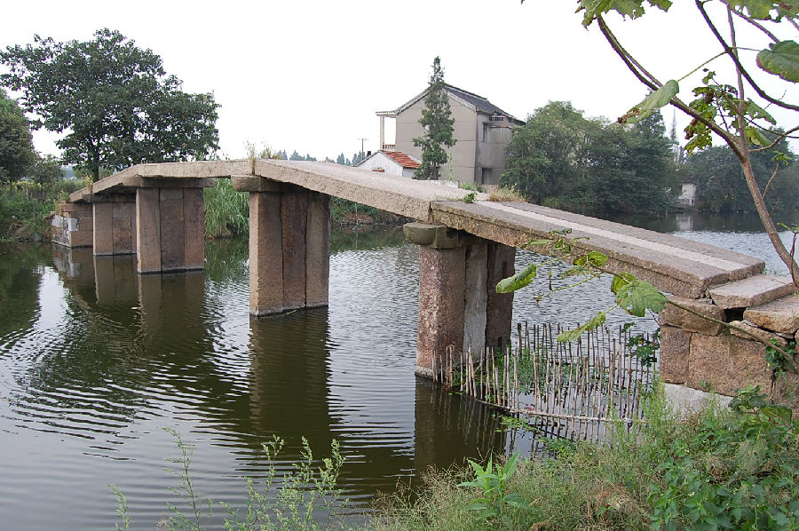

嘉兴市文物保护网 · 市级文物保护点 · 2020-11-03 · 原文

康和桥位于嘉兴市秀洲区新塍镇康和桥村1组。据桥的形制和当地村民的介绍，综合判断为清代建造。传说康王曾来过此地，百姓把桥取名为康和桥。南北横跨康和桥港，系五孔无栏梁式石板桥。桥长25.5米，桥面宽1.6米，桥面和桥柱均由3块石板组成。桥底距水面高度2.35米。南北桥堍各设石阶6级。桥额刻“重建康和桥”，桥身刻有卷草等纹饰。此桥曾处在重要的水上交通要道上，民间传说丰富，桥规模较大，做工考究，在当地古桥中属精品，具有较高的历史和艺术价值。2009年公布为嘉兴市文物保护点。